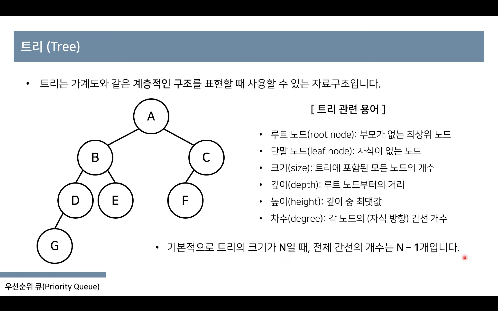
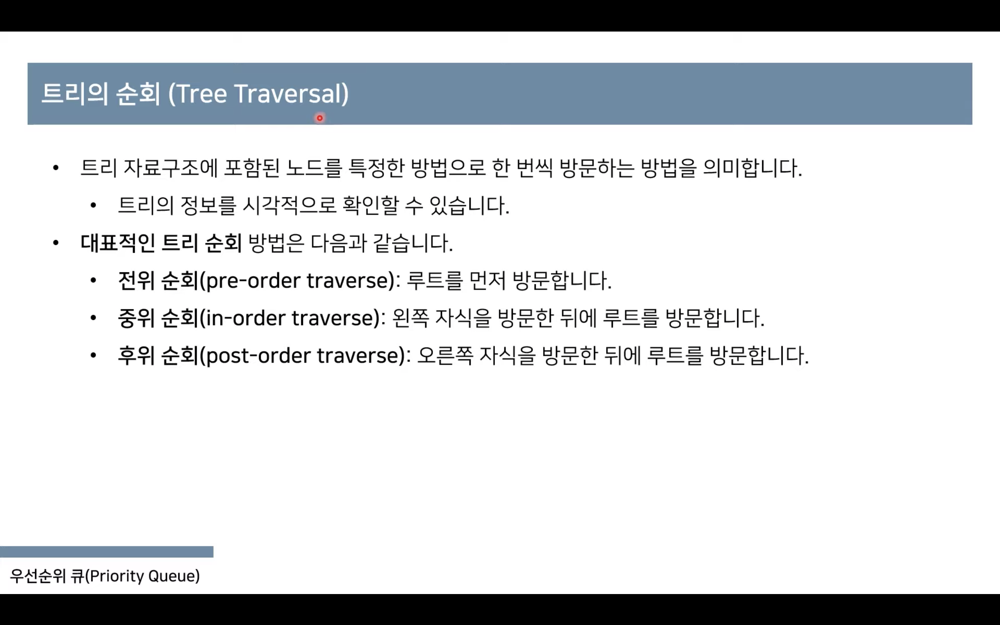
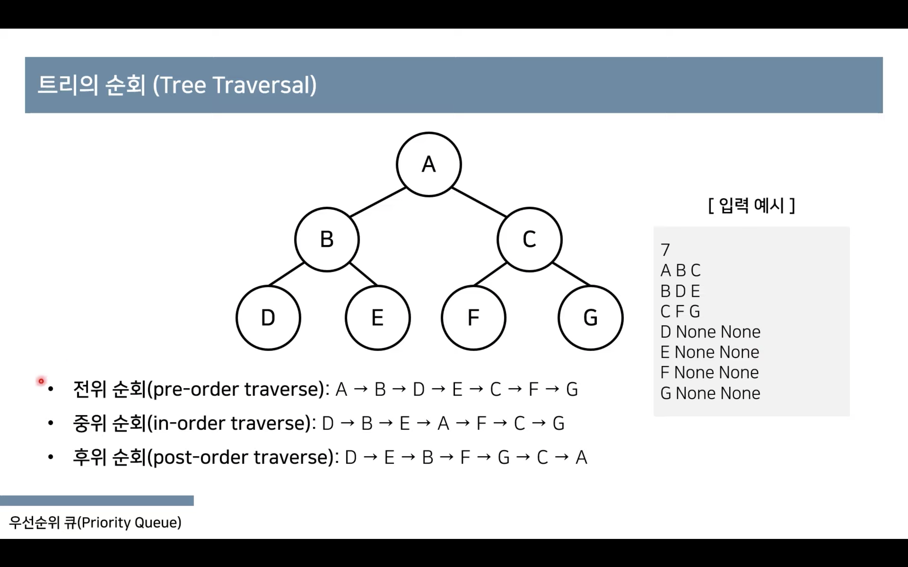
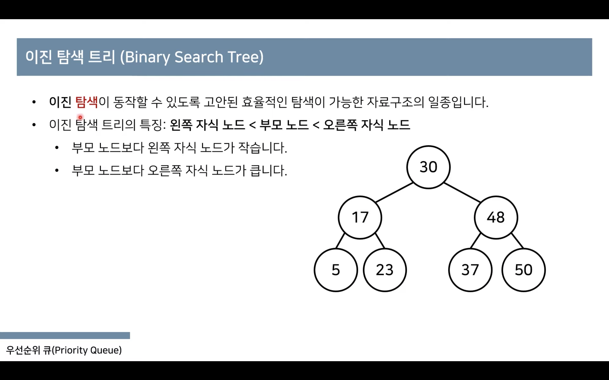
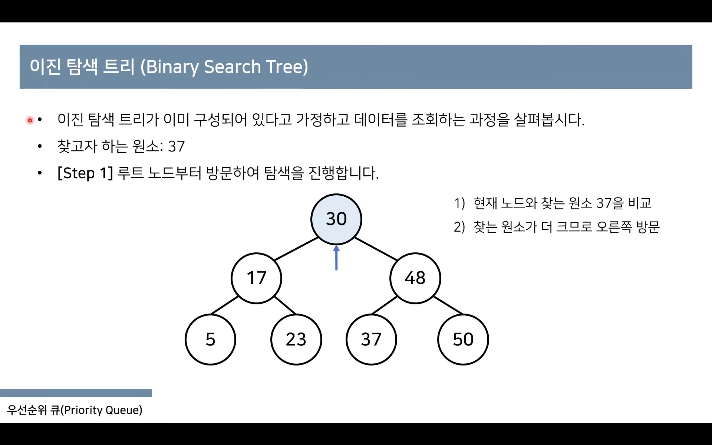
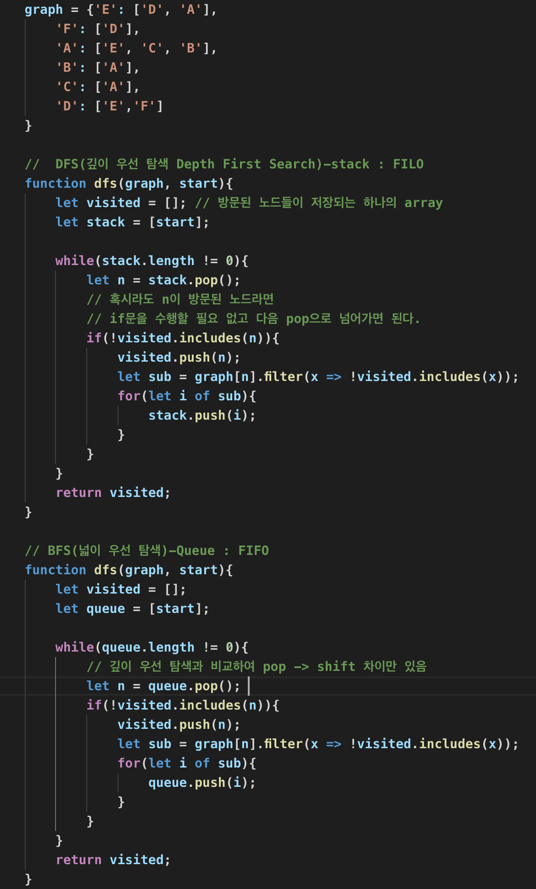
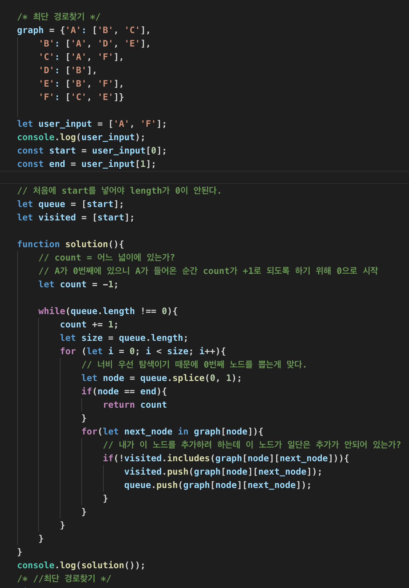

트리와 그래프
이진트리 : 포화이진트리, 완전이진트리
이진트리의 순회 : 전위순회, 중위순회, 후위순회
전위순회 : 루트 노트부터 잎 노드까지 아래 방향으로 방문
중위순회 : 왼->중->오 왼쪽 하위 트리부터 오른쪽 하위 트리 방향으로 방문
후위순회 : 잎 노드를 모두 탐색하고 루트노드 방문
  이진탐색트리 : 탐색을 위한 이진트리. 왼쪽 자식 노드는 나보다 작고, 오른쪽 자식은 나보다 크다는 특징이 있다.
 참고 : https://www.youtube.com/watch?v=i5yHkP1jQmo&t=573s
레드블랙트리 :
값이 루트노드보다 작거나 큰 값만 들어올 경우->불균형한 이진탐색트리->검색 효율 저하
이를 보완해주는 것이 레드블랙트리이다.
1. 트리의 모든 노드는 검정색 아니면 빨간색이다.
2. 루트 노드는 무조건 검정색이다.
3. 모든 잎 노드는 검정색이다.
4. 빨간색의 노드 자식들은 모두 검정색이지만, 검정색 노드 자식들은 어느 색깔이든 상관없다.
5. 루트 노드에서 모든 잎 노드 사이에 있는 검정색 노드의 수는 모두 동일하다.
그래프 알고리즘 : BFS(넓이 우선 탐색), DFS(깊이 우선 탐색)
DFS(깊이 우선 탐색 Depth First Search)-stack : FILO 현재 정점에서 한 방향으로 가면서 검사함. 막힌 정점은 포기하고 마지막에 따라온 간선으로 되돌아 간다.
BFS(넓이 우선 탐색 Breadth Frist Search)-Queue : FIFO 가까운 정점을 먼저 방문, 먼 정점은 나중에 방문함. 형제 탐색
 function makingFree (arr, root, i){ if(i < arr.length){ root = new Node(arr[i]); // Node 만들기 root.left = makingTree(arr, root.left, 2 * i + 1) // left값 넣기 root.right = makingTree(arr, root.right, 2 * i +2) // right값 넣기 turn root // Node 반환 (재귀! : 재귀함수는 반드시 종료조건!) } }